作者通过量化指标（数亚K线）与资金流向分析，揭示了当前A股处于‘存量博弈下的失血状态’。核心逻辑在于：市场缺乏增量资金，而新股发行与解禁带来的抽血效应持续压制指数表现。作者主张通过网格交易（低吸高抛）来应对震荡市，利用波动获取收益，而非依赖市场整体上涨。这种策略的本质是承认市场短期内难以形成趋势性行情，转而通过纪律性的机械操作，在多空纠缠中积累微小利润。
股养不炒：笑看千层浪，静候万点红
历史全职收益率
上周
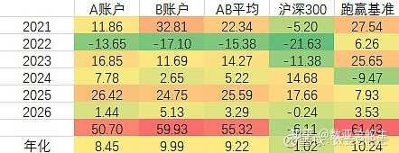
本周
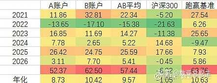
上周
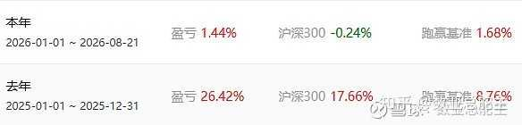
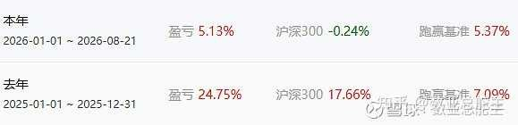
本周
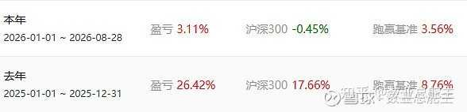
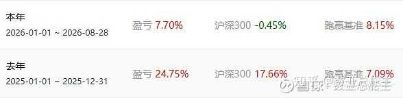
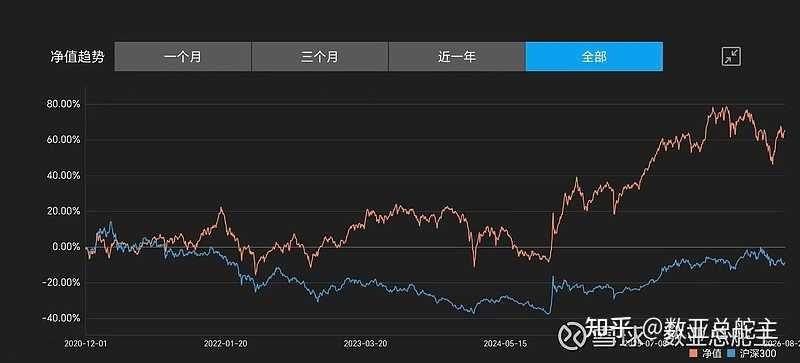
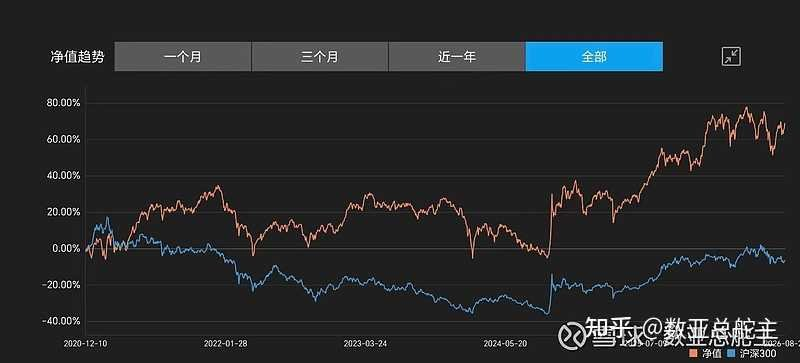
本周仓位96.5%，本周市值+2.12%，去年+25.59%，今年+5.41%；相比沪深300约+5.86%左右.持仓收益率和沪深300收益率差值本周相比上周+2.33%。本周会所继续超募，验证散户信心和韧性。
东财全A周线级别数亚K线注【本质逻辑】作者自创的量化评分体系，通过多维度指标将市场状态量化为0-20分。0分代表极度空头，20分代表极度多头。其核心是利用统计学概率，在极端情绪下寻找反转机会。【新手提示】不要迷信单一指标，这只是辅助判断情绪的工具，而非预测未来的水晶球。
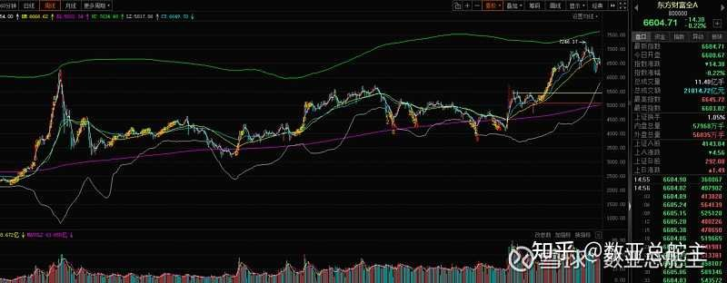
日线
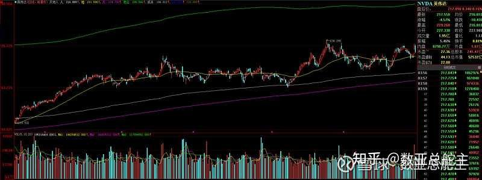
周线
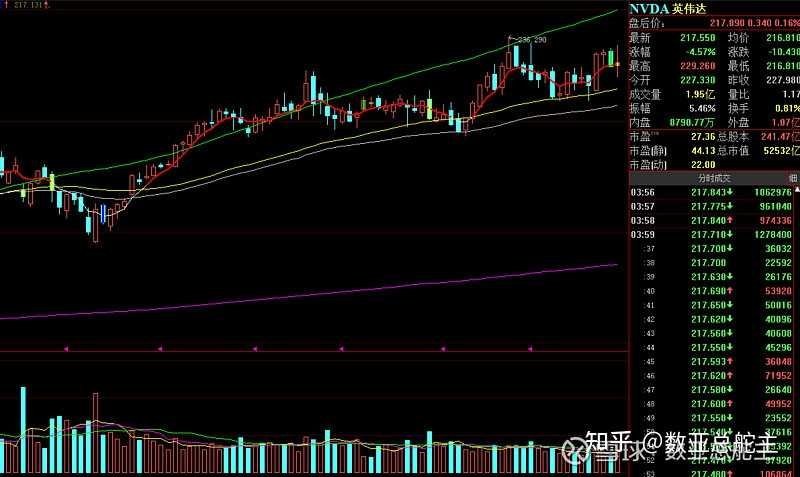
东升西落，西落只要观察这个标的就可以了。
未来3月解禁市值:（增加14亿左右)
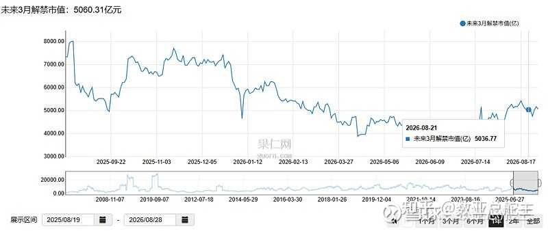
数据来源：果仁网
本周新股（5天5个）
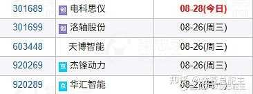
下周计划新股债（5天3个）
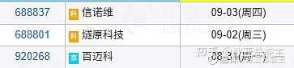
下下周计划新股债（5天0个）
本周5个。下周目前能见3个，下下周目前能见0个。本周总量和上周接近，本周总量61亿左右，仍然是正常周总量的2倍左右。会所不知道怎么想的，高位指导平准退出?连跌几周，低位超募？严重缺血的情况下，冷漠的继续抽血，崩崩更健康？
对于新股发行，我们散户需要提高到很高的警戒层面，一个是看发行数量一个是看发行体量。在高数量或者高体量的新股发行之前回避洪水，等洪水退去水流平缓之后再进去游泳。
新股新转债募资图
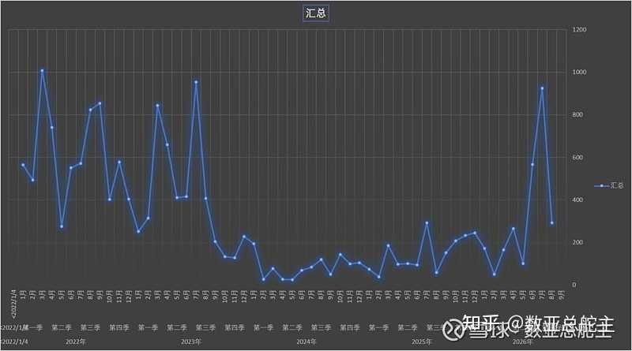
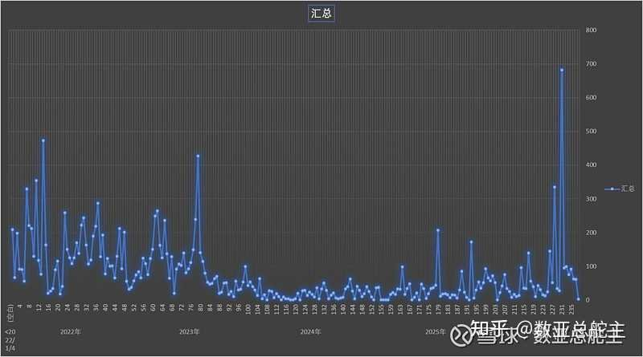
8月募资额有所收敛，不过单周均值仍然远远高于前任22-23年的单周极值。募资确实需要更健康的逻辑，比如市场不好，就不抽血；指数上涨一定比率，给出一定募资配额等。
指数数亚强度：
周变化
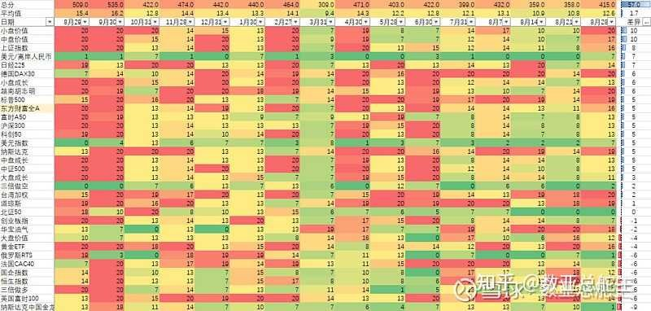
该表通过红绿颜色直观展示了各板块的多空强度。红色区域代表多头强势，绿色代表空头主导。新手应重点观察从绿色向红色转化的临界点，这往往是资金开始介入的信号，而非盲目追涨已经处于20分满分的板块。
百年未有之大变局。
舵主的判断是欧美和A港股都要开始拐头了。但是这个拐头，是以很多人财富激变为代价的，这个过程正在发生中。不过不得不佩服美团的预期管理，总能维持在高位似崩不崩。
这个表可以多关注，这个表可以从长周期角度观察哪个市场哪个产品现在的冷热和多空程度，帮助自己判断资产配置的方向。
主力动向
前面几年主力一直在流出，没有一个月是正流入的。上图是22年后每周和每月的北向和主力汇总。这张周主力流出图就是A股全体散户的血泪史，自从村里喊话大家挺起嵴梁骨，他们用流出图画出了一个不断下跪磕头的嵴梁。
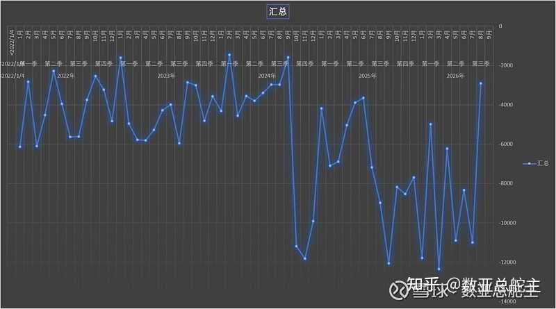
该图展示了主力资金长期净流出的趋势。从博弈角度看，这是散户与机构在信心层面上的严重分歧。主力持续离场，意味着机构对市场中长期预期悲观，散户在缺乏主力护盘的情况下，极易陷入‘接盘侠’的困境。
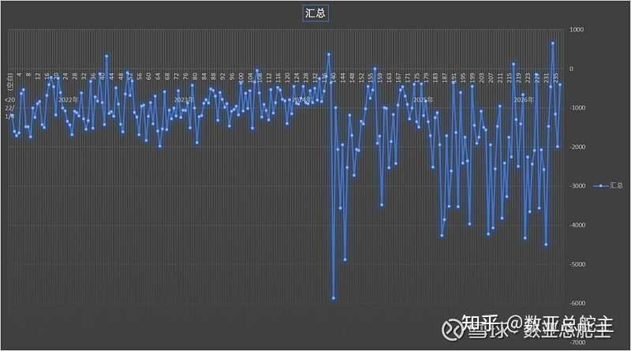
主力本周净流出比上周大幅度减少，几乎没有什么流出。
吐血建议上层加强公募机构恶意净流出监管，对违反稳定器操守的机构处以高额罚款.
热点及鱼仓股票强度周变化
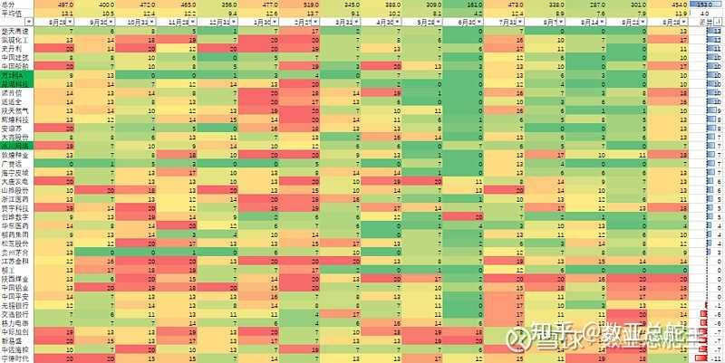
20分的可以手动网格卖出，买入0分的。切记一定是卖切糕一样网格操作！！！只要坚持买0卖20，大概率不会亏钱。
美股七姐妹强度周变化
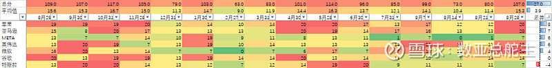
美股的情况，有空的化周末会单独写文章，平台一天只能一篇文章通知，所以需要自己点进公众号去看。
渡劫观察股强度周变化
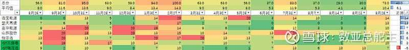
股票名字标绿色的，目前扣非收益注【本质逻辑】即扣除非经常性损益后的净利润，反映了公司主营业务的真实盈利能力。【新手提示】这是避雷关键，如果一家公司股价上涨但扣非收益为负，说明其盈利高度依赖补贴或资产出售，缺乏长期投资价值。是亏损的，尽量回避。
鱼仓股票本周涨跌
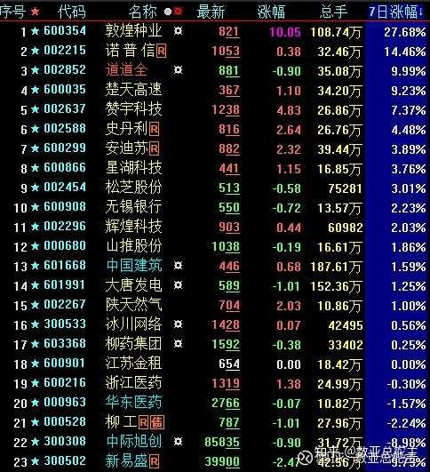
鱼仓股票25年五一选出至今涨跌
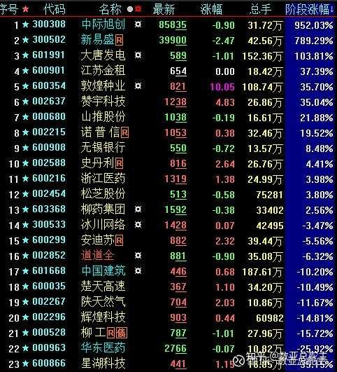
组合走势
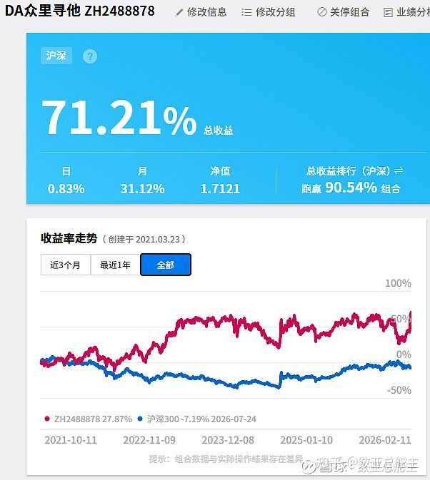
目前众里寻他组合收益最高，这周+25.6%，五年多+71.21%。四个组合只有两个盈利了。各个组合的持仓可以进我主页点进去看，也可以关注组合，这样会收到调仓的提醒。因为只是虚拟组合，所以我也不是非常用心，第一这个不能像自己账户一样设置网络羊毛，第二优先想到止盈止损的肯定是自己的实盘，虚拟盘哪个里面到底有哪个股票，我也是要点进去才能想起来。
数亚文章阅读应知应会：
指数和股票红绿区图：独家评测体系，适用已上市三年以上所有指数和股票。0分为短中长线处于完全空头走势，20分为短中长处于完全多头走势。0分反转概率增大但仍然可能出现长期下跌长期0分，20分反转概率增大但仍然可能出现长期上涨长期20分。13分左右是多空纠缠区域。13分以下比较弱势，13分以下开始强势。
买入卖出：需要结合自身的交易体系，有的人喜欢左侧，有的人喜欢右侧。没有绝对胜率的系统，每种交易系统各自为自己的风险买单
低估值股票：PB低，扣非ROE高（全A靠前），成长性好（同比环比高），自身历史分位较低
趋势：大仓位买进前看一下月线走势，看看是不是高位买入，位置是不是像日线那样让自己感觉想买入。
网格：能用网格交易注【本质逻辑】一种机械化的仓位管理策略，将资金分成多份，在预设的价格区间内进行买卖。其核心在于‘震荡市获利’，通过不断买低卖高，摊低持仓成本。【新手提示】网格交易最怕单边下跌行情，若标的持续阴跌，网格会越买越套，务必选择基本面稳健、波动率适中的标的。尽量网格交易，标的越多越好。一来可以对冲择股出现的风险，一来可以通过成交不断慢慢拉低成本。
均线：多看案例，自己去设置符合自己习惯的K线参数。均线只是参考，基于自己偏好的参数给出统计值。绝对胜率的线是不存在的，只能说大概率会帮助你做判断。
守正出奇：守正部分的内容我认为应该是正道，价值投资为主。出奇部分的赌性就很大了，在妖股军团很活跃的时候，挑选体质好的妖股在合适的位置可以小仓位参与赌一下，风险自负
$甬金股份(SH603995)$ $昊华能源(SH601101)$
全文逻辑总结：当前A股处于‘弱势震荡、资金失血’的存量博弈阶段。作者的核心避坑法则：1. 严控仓位，利用网格交易在震荡区间内摊低成本，切忌满仓赌单边行情；2. 警惕高位解禁与新股密集发行带来的流动性冲击；3. 坚持价值底线，回避扣非收益为负的‘渡劫股’。新手防踩雷法则：不要试图预测大盘底，要学会通过量化指标观察市场情绪，在市场‘冷漠抽血’时保持克制，在多空纠缠区域（13分左右）保持高度警惕。